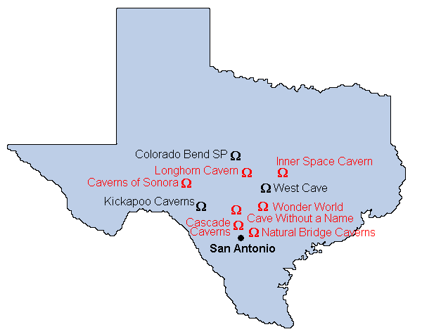

Texas

 10,000 Year Clock
10,000 Year Clock Bracken Bat Cave
Bracken Bat Cave- Cascade Caverns
- Cave Without a Name
 Colorado Bend State Park
Colorado Bend State Park Devil's Sinkhole
Devil's Sinkhole- Eckert James River Cave
- Hamilton Pool
- Downtown Houston Tunnel System
- Inner Space Cavern
 Jacob's Well
Jacob's Well- Kickapoo Cavern State Park
- Longhorn Caverns
- Natural Bridge Caverns
- Robber Baron Cave
- Caverns of Sonora
- West Cave
- Wonder World
Texas has three distinct landforms:
- Gulf Coastal Plains to the east.
- The Western Plains in the center of the State.
- The extension of the Guadalupe Mountains to the west.
Most of the texan caves are located in the center, especially in the Balcones Escarpment the edge of the Edwards Plateau near Austin and San Antonio.
Texas has seven show caves. Six of them are located between San Antonio and Austin within day-trip range. Only the Cavern of Sonora lies 275km west of San Antonio. The area around Austin is called Hill Country.
- See also
 The Edwards Aquifer Homepage
The Edwards Aquifer Homepage- Texas Speleological Survey TSS
- Texas Speleological Association
- Texas Hill Country Virtual Field Trip,
a virtual field trip explaining the geology of the hill country in central Texas.
 Texas Caves by Blair Pittman
Texas Caves by Blair Pittman- Attractions
- Some pictures of show caves
- Texas Caves and Caverns
- Passport to Texas - Parks and Historic Sites,
RealAudio radio interviews about Texas State Parks